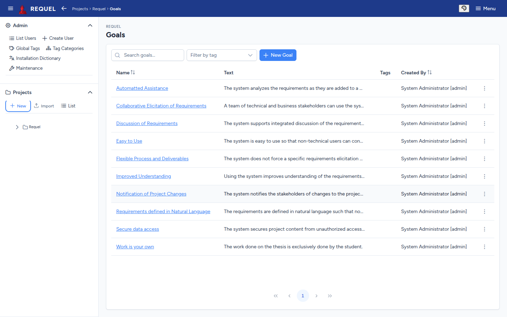
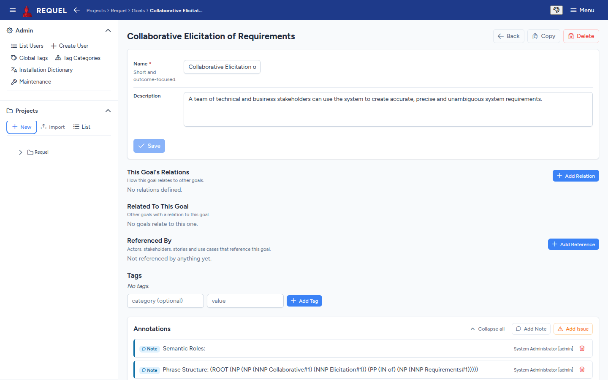
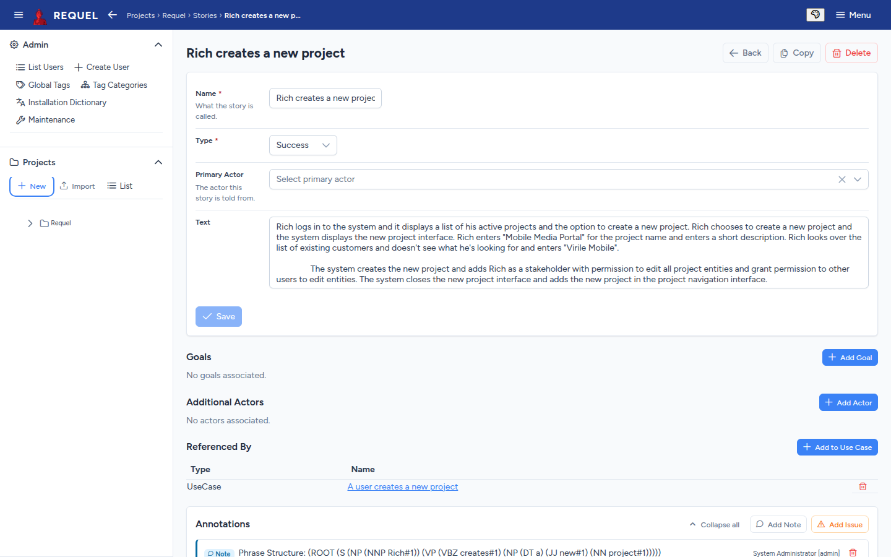
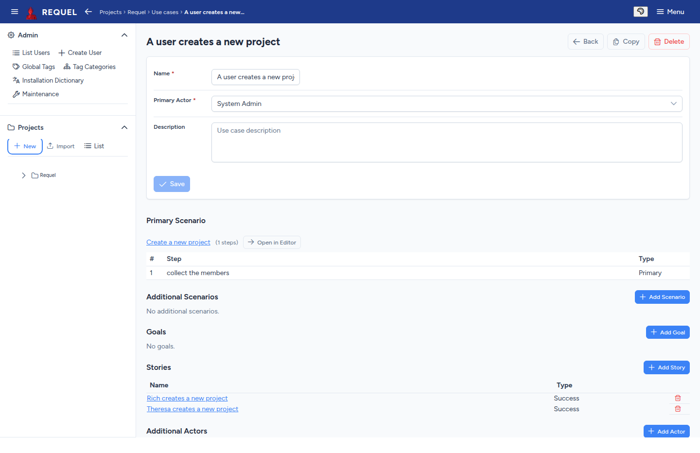
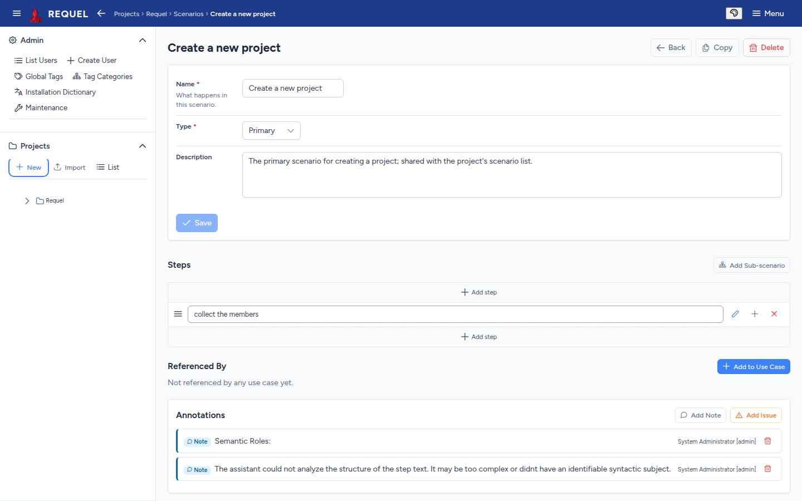
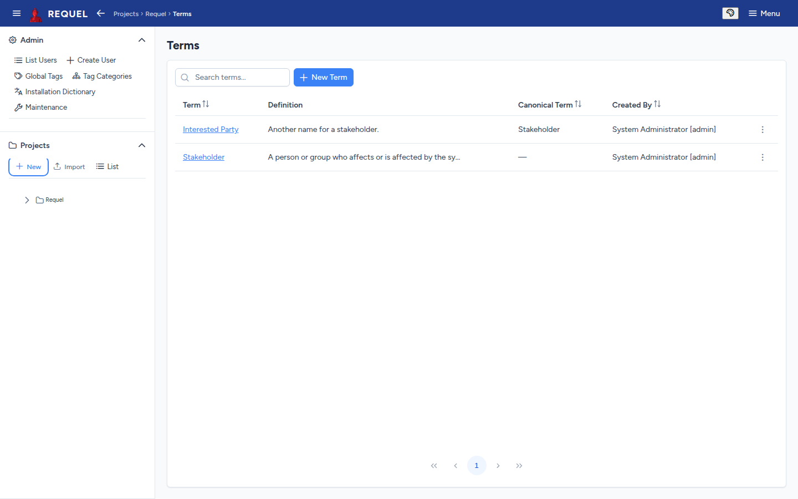

Requirements
Goals, stories, actors, use cases, scenarios and the glossary, and how they link together.
Lists and editors
Each kind of requirement has a list (from the sidebar tree or the overview’s tiles) with search, sorting and a New button. Click a name to open its editor.

Every editor works the same way:
- The details form at the top, with Save. Leaving with unsaved changes asks first.
- Copy makes a duplicate to start a similar one from; Delete removes it after you confirm.
- Below the form, the items it links to, each with an Add button, and Referenced By: the items that link to it.
- Tags and Annotations (notes and issues) at the bottom.
Goals
A goal is an outcome the system must achieve: a short name and a description. Relate goals to each other with Add Relation:
| Relation | Read from the other goal | Meaning |
|---|---|---|
| Supports | Supported by | This goal helps the other succeed. |
| Refines | Refined by | This goal is a more concrete statement of the other. |
| Depends on | Required by | This goal can’t be achieved until the other is. |
| Obstructs | Obstructed by | This goal makes the other harder, without making it impossible. |
| Measures | Measured by | This goal is the measurable stand-in for the other’s outcome. |
| Conflicts | Conflicts | The two can’t both be satisfied. |
| Duplicates | Duplicates | The two state the same requirement. |
This Goal’s Relations lists the ones you added here; Related To This Goal lists the ones other goals point at it. Actors, stakeholders, stories and use cases reference goals from their own editors.

Stories
A story is a short narrative of one person using the system. Its type is Success (it works) or Exception (something goes wrong). Pick the primary actor it is told from, add any other actors and the goals it illustrates, and Add to Use Case to file it under the use case it describes.

Actors
An actor is a role that uses the system: a kind of user, another system, a device. Give it a name and description and link the goals it cares about. Stories and use cases name their actors; the actor’s Referenced By shows where.
Use cases
A use case is something an actor does with the system. It needs a name and a primary actor. Then:
- Primary Scenario: the main flow. Create New makes one named after the use case; Select Existing reuses a primary scenario. Open in Editor edits its steps.
- Additional Scenarios: alternatives and exceptions.
- Goals, Stories and Additional Actors it involves.

Scenarios and steps
A scenario is a sequence of steps. Scenarios and steps have a type that says what part they play:
| Type | Use it for |
|---|---|
| Primary | The expected, successful case: the main flow of a use case. |
| Alternative | Another successful way through. |
| Exception | An interaction that fails. |
| Optional | A step that may be skipped. |
| PreCondition | What must happen first; without it the scenario can’t begin. |
Under Steps, Add step adds one at the top or bottom; drag a step’s handle to reorder; its buttons edit its details, add a step below it and remove it. Add Sub-scenario inserts another scenario as one step, so shared flows are written once. A scenario can belong to several use cases.

Glossary
The glossary holds the project’s terms. Each has a definition. When two words mean the same thing, pick the preferred one and set it as the other’s Canonical Term: the alternate then points at it, and the canonical term lists its Alternate Terms. In the sample, Interested Party is an alternate for Stakeholder.

Terms are often added straight from an issue: the assistants spot likely terms and offer Add to Glossary (resolving issues).
Sources
Requirements created by a tool from a ticket or a document (through the API or MCP) show a Sources section: where each came from, whether it was derived from the source or only cites it, and whether the source has changed since. Requirements you write by hand don’t have one.